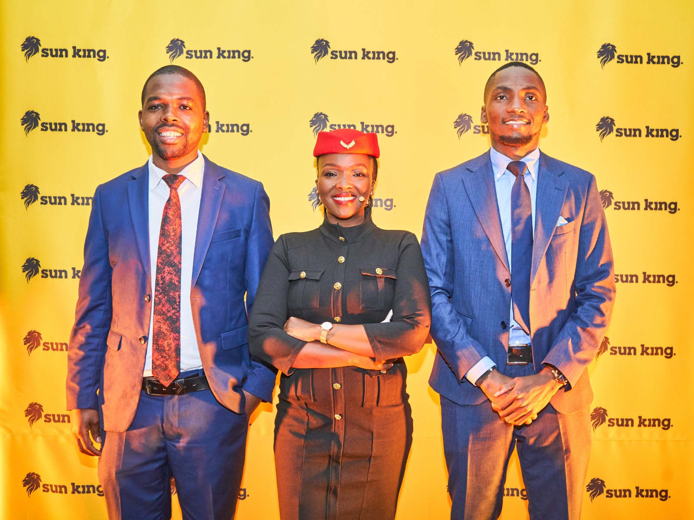
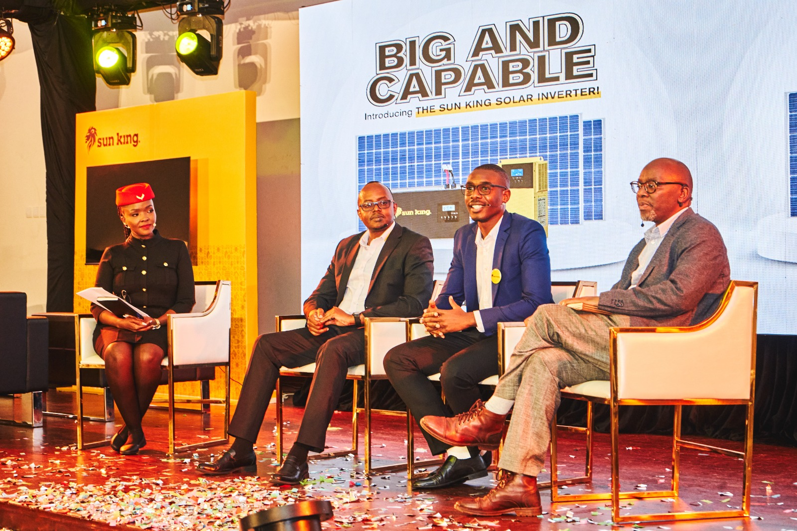
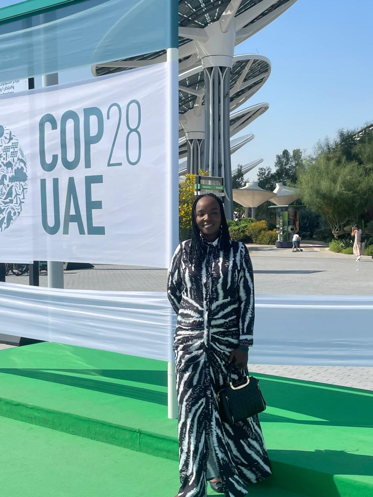
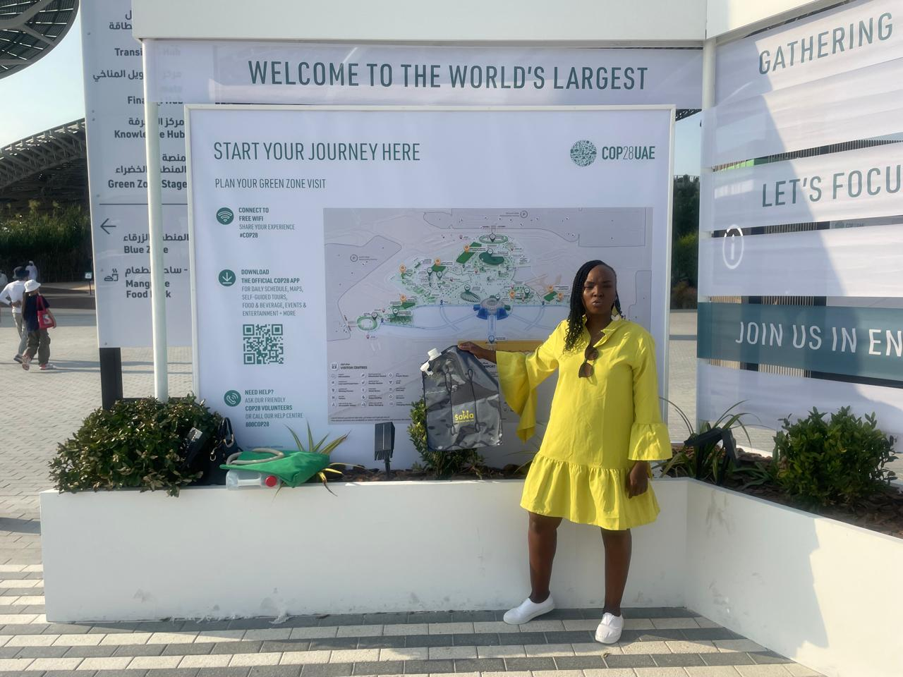

Every engagement tells a story. From commercial growth and sales enablement to organizational transformation and sustainability, the LynchPin Advisory partners with organizations to solve complex business challenges and create lasting impact.
Each engagement reflects a commitment to solving complex business challenges and delivering measurable outcomes.
Strategic Alliance Leader for Africa — marketing and selling Sunking products, implementing distribution strategies, and managing key relationships across the continent.
Sunking needed to scale their solar product distribution across Africa and strengthen market presence for their new solar inverter business line.
Work Highlights




Driving commercial revenue as Chief Commercial Officer — onboarding B2B partnerships, implementing C2C sales strategy, and expanding SAWA Bag and Can across East and West Africa.
SAWA needed to scale commercial operations across multiple countries and establish a strong market presence for their products.
Work Highlights




Strengthening commercial partnerships and expanding market presence across 30+ African countries.
ITM Africa is a professional services organization operating across Africa, providing solutions that support organizations in areas including talent, human capital, and workforce development.
Scaling commercial operations and building strategic partnerships for market expansion.
Business Development Consultant for a micro-insurance platform — driving market growth through B2B client onboarding, B2C engagement, and conference representation.
Strengthening sustainability offerings and expanding reach in African carbon markets.
Building a shared commercial language for a growing accessibility technology company.
Whether you're strengthening your commercial strategy, preparing your team for growth, or navigating organizational transformation, LynchPin partners with ambitious organizations to turn strategy into measurable results.
Book a Strategy Session